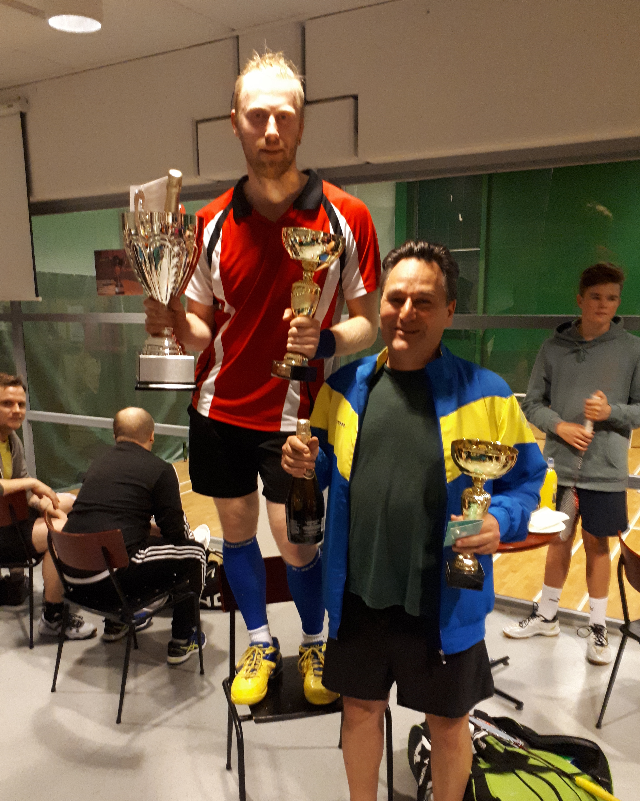

Sulkapalloseura Voittamisen Kulttuuri ry
Sulkapalloseura Voittamisen Kulttuuri ry
Ohhoh!!
Mailapelikisan purtavasta vastaa 19.1. Kulosaaressa...
Mailapelikisassa nähdään nimekkäitä ja kiinnostavia pelaajia!
Historiallisen kisan - hallin historian ensimmäisen mailapelikisan voittajasta käydään arvailuja.
Kisan ottelut lähestyvät, joten on aika siirtyä hieman virallisempaan tilannekatsaukseen.
Pelaajia on ilmoittautunut yli 40 eri urheilulajien taustoista ympäri Suomea.
Pisimmät ajomatkat turnauspyhättöön lienee Sotkamosta ja Tampereelta.
Tuoreimman Racketlon-kisan Happy New Year -turnauksen avoimen sarjan voittaja Sami Lithenius (Kerava, TTC Boom) nähdään paikalla!
Turnauksen A-luokka! Turnaukseen lähtee ykkössijoitettuna (1) Sami Lithenius, TTC BOOM ja kakkossijoitettuna itse oikeutettuna seuran,
Voittamisen Kulttuuri ry, oma toivo (2) Hannu Aro.
A-luokka, AM DIGI, pelataan kahdessa viiden (5) pelaajan lohkossa. Kaksi lohkon parasta jatkoon. Osa A-luokan otteluista pelataan jo perjantaina.
Volvo Hybrid -lohko;
(1.) Lithenius Sami
(4.) Heinonen Joonas
Von der Pahlen Willliam
Jurikivi Toomas
Kauppila Kim
ICY FORM -lohko;
(2.) Aro Hannu
(3.) Vuorinen Juho
Nissinen Mikko
Byckling Pauli
Savolainen Anton
Kaavio A-luokan peleihin...
Turnauksessa pelataan etenkin pingiksessä kovatasoinen B-luokka, BobMassage -luokka, joka alkaa perjantaina. Luokan ykkössijoitettuna on Pekka Tennilä Tampereelta.
BobMassage -luokka pelataan kahdeksan pelaajan cup-kaaviolla. Kaikille kolme ottelua. Sijat 5-8 pelataan myös.
Yksi kaavion peleistä pelataan jo perjantaina. Sakke Rajala (2) vs. Jussi Isoperkkiö klo 20:30.
Kaavio B-luokan peleihin...
Turnauksen C-luokassa, Breadstick, pelataan jopa yli 16 pelaajan cup-kaavio, jonka ykkössijoitettuna on hallin oma toivo Sara Tuomala.
Turnauksen Breadstick -luokassa pelataan myös sijoitusotteluita vaikka häviäisi ensimmäisen kierroksen ottelun. Osa kaavion peleistä pelataan jo perjantaina.
Kakkossijoitettuna kaaviossa on kotihallin toinen toivo Robert Avellan.
Kaavio C -luokan peleihin...
Kisoissa pelataan myös juniorisarja, FlowDrinks, lauantaina. FlowDrinks -sarjassa on useita tulevaisuuden tähtipelaajia.
Juniorit pelaavat FlowDrinks -sarjassa 11 pisteeseen.
Matti Koskelan, Mikko Nissisen, William von Der Pahlenin, Pessi Ekin, Ville Julinin, Jukka Julinin,
Terho Pekkarisen, Aki Mikkosen, Jukka Raumannin ja Pekka Tennilän ensimmäiset ottelut alkavat vasta lauantaina.
Kaikki muut pelaavat ainakin ensimmäisen kierroksen ottelunsa jo perjantaina.
Turnauksen avausotteluna on Henri Lehikoinen vs. Mikko Lammi, C -luokka, perjantaina klo 19.00!
Tarkistakaa vielä otteluaikanne. Esim. Heinonen, Kauppila, Jurikivi ottelun aikaa sekä järjestystä muutettu pyynnön vuoksi.
Toivottavasti tämä ohjelma toimii nyt kaikille.
1. Muistakaa olla hyvissä ajoin vähintään 15 min. oman pelin alkua paikalla.
2. Muistakaa kunnioittaa kisajärjestäjän antamaa palloittelu/lämmittelyaikaa per jokainen laji.
Aikataulu ovat tiukat -niin myös pelit!
Yksi turnauksen erikoisuuksista on Volvon pelaajille tarjoama mahdollisuus ShuttleService -palveluun
Kulosaaren metroaseman ja hallin välillä puh.numerosta (09) 621 1303 turnauksen aikana.
Pingisvalmennusta
VKn mailapelikisan yhteyteen on mahdollisuus saada pöytätennisvalmennusta.
Saksalaistaustainen ja
yli 10 vuotta Suomessa asunut Alex Dyroff järjestää kahden tunnin valmennuksen
kisaviikonlopun lauantain
aamuna klo 9-11 ennen toisen päivän starttia. Hinta on 10 €/hlö.
Valmennukseen voi ilmoittautua tapahtumat -linkistä tai markovalimaki@hotmail.com
Ps. Alexilla on myös mailojen maahantuontia, joten häneltä voi myös ostaa oman hyvän mailan.
Sellaisen pingismailan, joita ei suomalaisesta urheilukaupasta löydä.
Mailapelikisa 19.-20.1. Kulosaaressa!
Kulosaaren Puhos Centerissä pelattavan turnauksen avajaispuhe kuullaan perjantaina klo 18.30,
jonka jälkeen käynnistyvät lämmittelymahdollisuudet ja
turnauksen ensimmäiset ottelut - aikaisintaan n. klo 19 alkaen.
Mahdollisuuksien mukaan illalla voidaan pelata tarvittaessa myös toisen kierroksen otteluita. Turnaus
jatkuu (LA pingisleirin klo 09-11 jälkeen) lauantaina n. klo 11.30
alkaen. Aikatauluissa voidaan huomioida toivetta pelata kaikki ottelut esim. lauantaina (muista mainita
kommenttikentässä ilmon yhteydessä). Pääpaino kaikissa sarjoissa ja otteluissa on siis lauantai!
Sarjojen finaaleja saadaan pelattua loppuun lauantai-iltaan mennessä.
Turnauksen kilpailulajit ovat pöytätennis, sulkapallo ja tennis. Jokaisessa lajissa peli päättyy,
kun johdossa
oleva pelaaja on voittanut 21 pistettä. Lajivoittoon tarvitaan kuitenkin aina kahden pisteen ero. Pelaaja,
joka
kerää kolmesta lajista eniten yhteispisteitä voittaa mailapeli-ottelun.
Turnauksessa on käytössä tod.näk. peräti neljä pingispöytää, joista yksi ns. lämmittelypöytä ja keskikentillä
sijaitseva päänäyttämön keskuspöytä (live-stream).
Sulkapallokenttiä on koko ajan käytössä vähintään kaksi, joista toinen ns. keskuskenttä (live-stream). Viimeinen
laji, tennis, pelataan kahdella kentällä.
Tenniskentät ovat joustopuulattian päälle valmistetut Bolltex Elite -pinnoitteet. Varatenniskenttänä toimii kova
GreenSet-kenttä.
Turnauksessa on mahdollista saada pelaajille ShuttleService Kulosaaren metroaseman ja hallin välillä.
Osasta otteluita saadaan lyhyitä live-stream
-lähetyksiä Helsinki Hawks`n Facebook -sivuilta.
Turnauksessa pelataan siis Racketlon -säännöillä vaikka varsinaisesti puhumme tässä
yhteydessä vain
mailapelikisasta koska squashia ei tosiaan pelata.
Turnaukseen osallistuminen ei edellytä mailapeliseuraa tai -lisenssiä. Kilpalijoita ei näin ollen
luonnollisesti
vakuuteta, eikä lisenssi ole täten pakollinen. Vapaaehtoisen lisenssin, jolla voi kilpailla muissa
kansallisissa kilpailuissa, voi halutessa ostaa turnauksen yhteydessä. Luokkia on tarjolla kaiken tasoiseen
kilpailemiseen
sisältäen myös ensikertalaisten luokan.
Osallistuminen ja ilmoittautuminen: voittamisenkulttuuriry@outlook.com TAI
ilmoittautumislomakkeesta, joka löytyy tapahtumat-välilehdestä
Turnauksen kaaviot ja otteluajat julkaistaan näillä sivuilla tai:
Hannu Aro puh. 050 328 9319
www.racketlon.fi sivulta löytyy myös lisää
tietoa racketlon-lajista.
Mailapelikisan mahdollistaa ja turnausta tukevat


Turnauksen tukena ovat Bilia Volvo Herttoniemi, Breadstick No.4, Flow Drinks, Kiinteistömaailma, Kiinteistömake, ICY
FORM, Mailajännitys-Aro, MassageBob, Suomen Racketlonliitto...
Autot vaihtoon kisan aikana! Volvon autot (V90 ja XC60 Hybrid) ovat kisojen aikana esittelyssä ja
koeajettavissa.
Riittävän hyvin pelanneille tiedossa ilmaisia lounaita! Breadstick No.4 tarjoaa lahjakortteja
kulinaristipaikkoihinsa.
Turnauksen tankkauksesta pelisuorituksen aikana vastaa suomalainen Flow Drinks -terveysjuoma.
Tmi Hannu Aro jännittää sulkis- ja tennismailat.
Asunnot myy Kiinteistö-Make idästä.
ICY FORM -design tuotteita tavarapalkintoina.
Hallin oma kuuluisa MassageBob palkitsee hyvin pelanneita lahjakorteilla. Hierontaa tarjolla kisan aikana esim.
katsojille.
Racketlon Finland toteuttaa tournamentsoftware -kaavion ja julkaisee kisaraportin sekä kuvia
turnauksesta.
Pääsarjan voittajat (naiset ja miehet A) palkitaan myös vapaapääsyllä
"villikortti" Racketlonin SM-kisoihin 17.-18.3.2018
(Myllypurossa) järjestäjien/rankingin mukaiseen
paikkaan.
Racketlonin lisenssi
Nyt on mahdollista ostaa koko vuoden 2018 voimassa oleva lisenssi Racketloniin tätä kautta. Hinta koko vuodelle on aikuisilta vaivaiset 14 euroa.
Lapsilta vielä edullisempi. SuomiSport, eli lisenssi kattaa kaikki vuoden Racketlon-kisat ja rankingin määräytymisen Racketlonliiton ylläpitämään Rankinglistaan. Kaksinpelin SM-kisat
pelataan Smash Centerissä maaliskuun 16.-18.3. päivänä. Joukkue SM-kisat pelataan kesän jälkeen ja todennäköisesti Tuusulassa. Olisi hienoa, jos VK saisi oman
joukkueen SM-kisoihin. (VKn tammikuun mailapelikisassa lisenssi ei ole kuitenkaan pakollinen).
Sporttipassin lunastaminen käy helposti - valitse
1. "Sisään Suomisporttiin"-painike
2. "Kirjoita s-postisi" ja valitse Racketlon-seurasi (VK).
3. Järjestelmä lähettää tunnukset Suomisporttiin sähköpostiisi ja eikun pelaamaan.
SuomiSport.fi
LöScaba #25
Maailman kaunein sulkapalloturnaus järjestettiin kahdennenkymmenennenviidennen kerran, Kulosaaressa
tottakai!
Alkuun lämmin kiitos yhteistyökumppaneille, jotka mahdollistivat tämän ikimuistoisen
launtaiehtoon!
AM Digipaino, Flow Drinks, Kiinteistömaailma Itäkeskus, massageBob, Tmi Hannu Aro, Treffi Pub,
www.restless.fi, www.seuravaate.fi

Se puhutuin, se tavoitelluin, se kaunein, se hauskin, se kokonaisvaltaisin... ...se surullisin - ainakin niille
49 muulle osallistujalle. Järjestysnumero 25 miteltiin jo perinteisesti Kulosaaressa 18.11.2017. Verinen
taistelu käytiin yhdessä sarjassa: Mestaruus. Toki mukana oli kaikille jotain ja mestaruudesta
palkittiin myös Hupi- ja Nelinpeliluokassa.
Kilpasarjassa nimensä mukaisesti mittelivät kaikki olympiatason sulkapalloilijat. Pelitapa oli
uusituulahdus, joka lainattiin elektronisen urheilun puolelta ja tottelee nimeä Swiss System. Lohkot siis käytiin
periaatteella 3 voittoa jatkoon, 3 tappiota ja lauluun. Lohkovaiheet menivät siidattujen pelaajien osalta
muuten hyvin odotetusti, luukunottamatta kalamies-Laitisen Jampan jopa hieman närää herättänyttä
siiman antoa ennalta heikompia vastustajia vastaan.
Hupisarjassa oli jälleen kymmeniä ensikertalaisia kokeilemassa siipiään, mutta kuten VK:n
arvomaailmaan kuuluu -"vain voittajat muistetaan". Per Saris tuli, oli ykkössiidi ja näin hän
otti omansa - taas. Lieneekö tämä luokkahuijari tulevan uuden sarjan nimeltä harraste ensimmäinen
ykkössiidi.
Kilpasarjan kaaviovaiheessa pelit kovenivat ja tarjoilut paranivat. Kiitos jälleen kerran cateringille joka
toimittaa taivaalliset piirakat rakkaille kilpailuosallistujillemme. "Kalamiehen" surffailu ja siiman jakaminen
sai aikaan sen, että moraalinen finaali pelattiinkin VK:n kotikentällä 3 jo puolivälierävaiheessa.
Kaksteistkertanemestar-Aro lähti ylimielisesti, vasta toista kertaa maailman kauneinpaan osallistuneeseen
Jani "kahenkilonsiika" Laitista vastaan. Tämä "moraalinen finaali" kostautuikin farssiksi, sillä
Laitinen piti noin 20min privaatin VK:n veteraanimestarille. Myöhemmin kaaviossa nuoriosuja Niilo Nyqvist
poimi välierissä oman privaattituntista Kalamieheltä ja finaalissa
maajoukkue-Nico (Nicolas Vena) joutui myös tunnustamaan urponerämiehen valmentajakseen. Näin
ollen toista kertaa mukana ollut Jani Laitinen poistui paikalta pokaalin, lahjakorttien,... ...Ennen kaikkea sen
maailman arvostetuimman sulkapallotittelin eli LöScaban mestarin viitan kanssa.
Nelinpelissä sitten NuoriNiilo piti kaasun pohjassa ensimmäiseltä kierrokselta mestaruuteen
asti... ...toivottavasti nelinpeli parille maju-Nicollekin tarttui muutama oppi matkaan!
Seura kiittää kaikkia osallistuneita ja toivottaa kaikki tervetulleiksi myös jatkossa! Keväällä
mennään seuraavan kerran ja alustavasti toukokuun puolenvälin hujakoilla.
Voittajia Onnitellen
Sulkapalloseura Voittamisen Kulttuuri
VK:sta Racketlon seura
VK on liittynyt Racketlon-liiton jäsenseuraksi.
Liiton kilpailutoimikunnan kanssa käytyjen neuvotteluiden seurakusena sulkapalloseura Voittamisen
Kulttuuri ry, on nyt myös virallisesti Racketlon-seura.
Seuran jäsenillä on oikeus osallistuaa racketlon-liiton alaisiin kilpailuihin VK:n väreissä.
VK:n
seura- ja kilpailutoiminnan pääfokus säilyy tottakai sulkapallon ympärillä,
mutta kehitystyötä racketlonin parissa aloitellaan kevään mittaan.
Racketloniin lähdetään myös tapahtumien puolesta mukaan ja VK järjestääkin
ensimmäisen racketlon turnauksen
jo tammikuun 19-20. Normaalista poiketen squash jää pois ohjelmasta ja turnauksessa
kilpaillaan pingiksen, sulkapallon ja tenniksen parissa, sillä
Kulosaaren pyhätöllä ei valitettavasti ole tarjota squashia varten kenttiä. Turnaus
ei vaadi liiton kilpailulisenssiä, joten ensikertalaiset
pääsevät helposti tutustumaan lajin saloihin Kulosaaressa.
Ilmoittautuminen turnaukseen tapahtuu sähköpostitse voittamisenkultuuriry@outlook.com tai turnaukset / tapahtumat -linkin alta. Ilmottautumisaikaa
on 15.1.2018, joten pikapikaa ilmottautumaan mukaan!
Ystävällisin Terveisin
VK-Hallitus